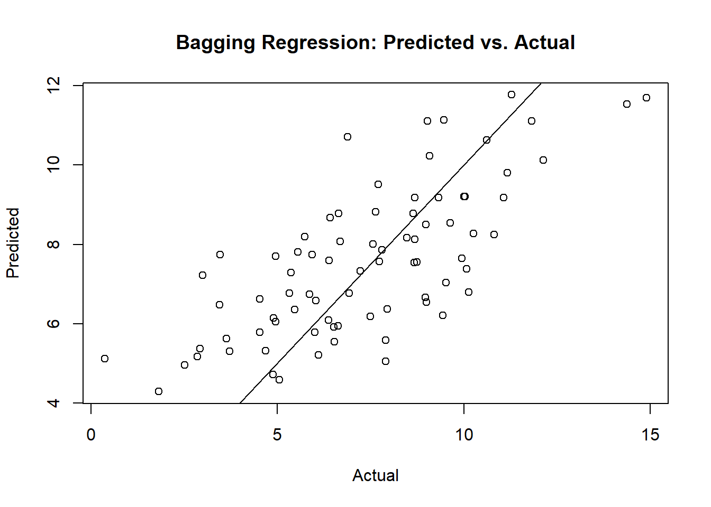
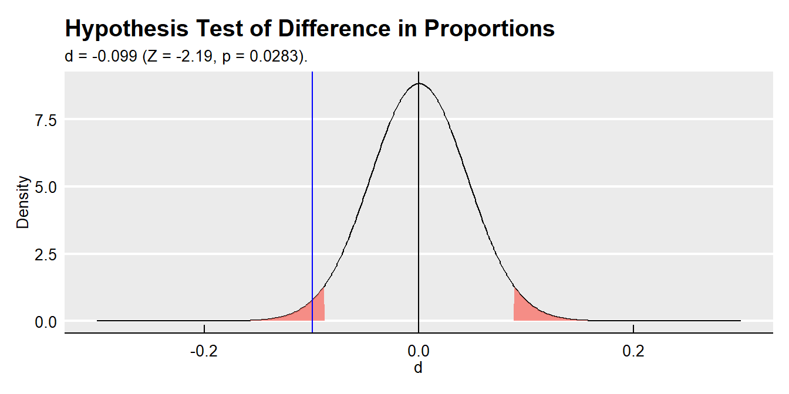
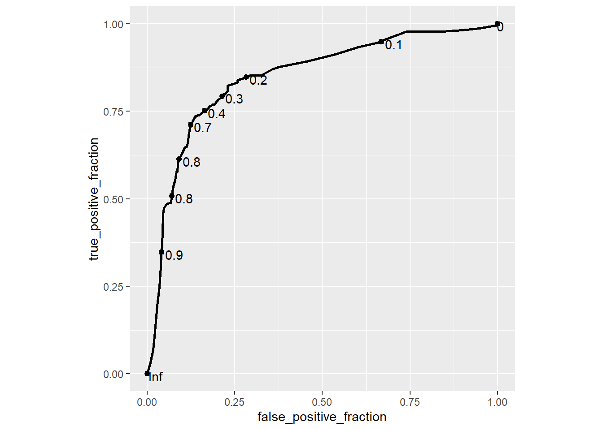
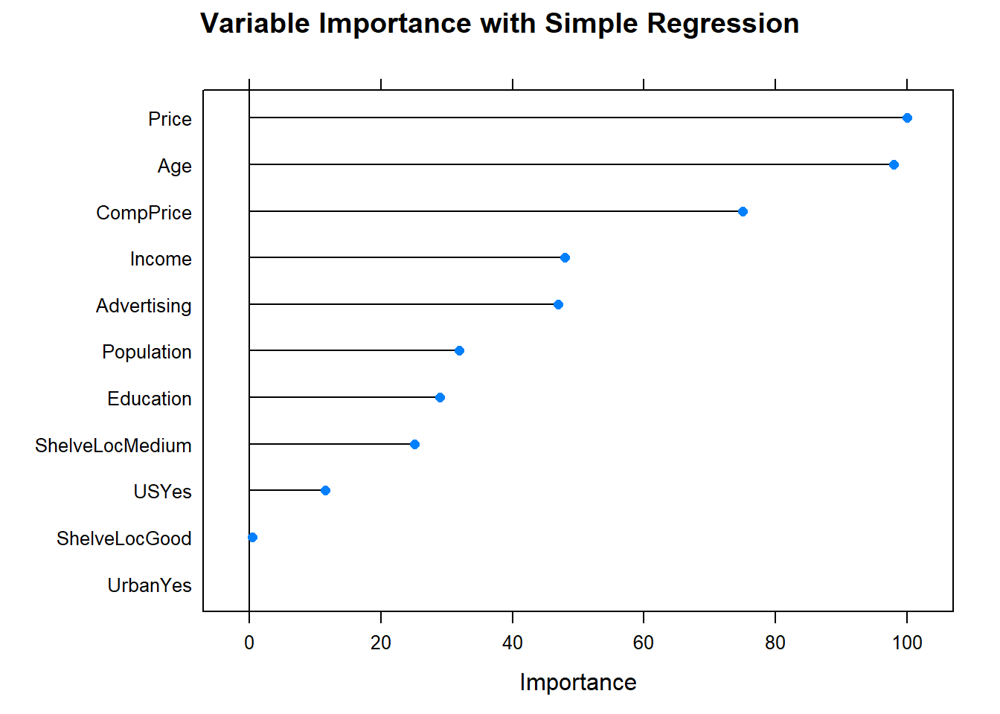
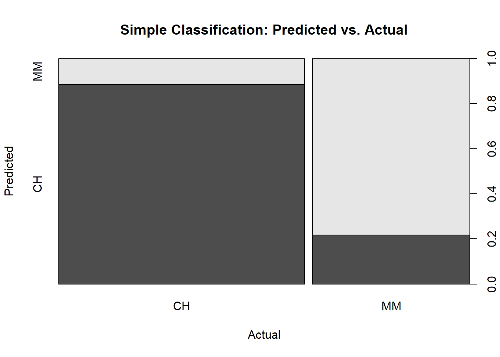
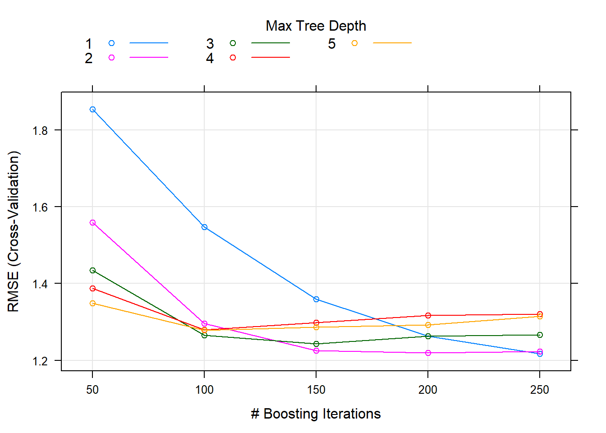

10.4 Example
Here is a data set of two classes \(y \in [-1, 1]\) described by two features \(X1\) and \(X2\).
library(tidyverse)
set.seed(1)
x <- matrix(rnorm (20*2), ncol=2)
y <- c(rep(-1, 10), rep(1, 10))
x[y==1, ] <- x[y==1, ] + 1
train_data <- data.frame(x, y)
train_data$y <- as.factor(y)A scatter plot reveals whether the classes are linearly separable.
ggplot(train_data, aes(x = X1, y = X2, color = y)) +
geom_point(size = 2) +
labs(title = "Binary response with two features") +
theme(legend.position = "top")
No, they are not linearly separable. Now fit a support vector machine. The e1071 library implements the SVM algorithm. svm(..., kernel="linear") fits a support vector classifier. Change the kernal to c("polynomial", "radial") for SVM. Try a cost of 10.
## Warning: package 'e1071' was built under R version 3.6.2m <- svm(
y ~ .,
data = train_data,
kernel = "linear",
type = "C-classification", # (default) for classification
cost = 10, # default is 1
scale = FALSE # do not standardize features
)
plot(m, train_data)
The support vectors are plotted as “x’s”. There are seven of them.
## [1] 1 2 5 7 14 16 17The summary shows adds additional information, including the distribution of the support vector classes.
##
## Call:
## svm(formula = y ~ ., data = train_data, kernel = "linear", type = "C-classification",
## cost = 10, scale = FALSE)
##
##
## Parameters:
## SVM-Type: C-classification
## SVM-Kernel: linear
## cost: 10
##
## Number of Support Vectors: 7
##
## ( 4 3 )
##
##
## Number of Classes: 2
##
## Levels:
## -1 1The seven support vectors are comprised of four in one class, three in the other. What if we lower the cost of margin violations? This will increase bias and lower variance.
m <- svm(
y ~ .,
data = train_data,
kernel = "linear",
type = "C-classification",
cost = 0.1,
scale = FALSE
)
plot(m, train_data)
There are many more support vectors now. (In case you hoped to see the linear decision boundary formulation, or at least a graphical representation of the margins, keep hoping. The model is generalized beyond two features, so it evidently does not worry too much about supporting sanitized two-feature demos.)
Which cost level yields the best predictive performance on holdout data? Use cross validation to find out. SVM defaults to 10-fold CV. I’ll try seven candidate values for cost.
set.seed(1)
m_tune <- tune(
svm,
y ~ .,
data = train_data,
kernel ="linear",
ranges = list(cost = c(0.001, 0.01, 0.1, 1, 5, 10, 100))
)
summary(m_tune)##
## Parameter tuning of 'svm':
##
## - sampling method: 10-fold cross validation
##
## - best parameters:
## cost
## 0.1
##
## - best performance: 0.05
##
## - Detailed performance results:
## cost error dispersion
## 1 0.001 0.55 0.44
## 2 0.010 0.55 0.44
## 3 0.100 0.05 0.16
## 4 1.000 0.15 0.24
## 5 5.000 0.15 0.24
## 6 10.000 0.15 0.24
## 7 100.000 0.15 0.24The lowest cross-validation error rate is 0.10 with cost = 0.1. tune() saves the best tuning parameter value.
##
## Call:
## best.tune(method = svm, train.x = y ~ ., data = train_data, ranges = list(cost = c(0.001,
## 0.01, 0.1, 1, 5, 10, 100)), kernel = "linear")
##
##
## Parameters:
## SVM-Type: C-classification
## SVM-Kernel: linear
## cost: 0.1
##
## Number of Support Vectors: 16
##
## ( 8 8 )
##
##
## Number of Classes: 2
##
## Levels:
## -1 1There are 16 support vectors, 8 in each class. This is a pretty wide margin.

What if the classes had been linearly separable? Then we could create a maximal margin classifier.
train_data_2 <- train_data %>%
mutate(
X1 = X1 + ifelse(y==1, 1.0, 0),
X2 = X2 + ifelse(y==1, 1.0, 0)
)
ggplot(train_data_2, aes(x = X1, y = X2, color = y)) +
geom_point(size = 2) +
labs(title = "Binary response with two features, linearly separable")
Specify a huge cost = 1e5 so that no support vectors violate the margin.
m2 <- svm(
y ~ .,
data = train_data_2,
kernel = "linear",
cost = 1e5,
scale = FALSE # do not standardize features
)
plot(m2, train_data_2)
##
## Call:
## svm(formula = y ~ ., data = train_data_2, kernel = "linear", cost = 100000,
## scale = FALSE)
##
##
## Parameters:
## SVM-Type: C-classification
## SVM-Kernel: linear
## cost: 100000
##
## Number of Support Vectors: 3
##
## ( 1 2 )
##
##
## Number of Classes: 2
##
## Levels:
## -1 1This model will have very low bias, but very high variance. To fit an SVM, use a different kernel. You can use kernal = c("polynomial", "radial", "sigmoid"). For a polynomial model, also specify the polynomial degree. For a radial model, include the gamma value.
set.seed(1)
m3_tune <- tune(
svm,
y ~ .,
data = train_data,
kernel ="polynomial",
ranges = list(
cost = c(0.001, 0.01, 0.1, 1, 5, 10, 100),
degree = c(1, 2, 3)
)
)
summary(m3_tune)##
## Parameter tuning of 'svm':
##
## - sampling method: 10-fold cross validation
##
## - best parameters:
## cost degree
## 1 1
##
## - best performance: 0.1
##
## - Detailed performance results:
## cost degree error dispersion
## 1 0.001 1 0.55 0.44
## 2 0.010 1 0.55 0.44
## 3 0.100 1 0.30 0.26
## 4 1.000 1 0.10 0.21
## 5 5.000 1 0.10 0.21
## 6 10.000 1 0.15 0.24
## 7 100.000 1 0.15 0.24
## 8 0.001 2 0.70 0.42
## 9 0.010 2 0.70 0.42
## 10 0.100 2 0.70 0.42
## 11 1.000 2 0.65 0.24
## 12 5.000 2 0.50 0.33
## 13 10.000 2 0.50 0.33
## 14 100.000 2 0.50 0.33
## 15 0.001 3 0.65 0.34
## 16 0.010 3 0.65 0.34
## 17 0.100 3 0.50 0.33
## 18 1.000 3 0.40 0.32
## 19 5.000 3 0.35 0.34
## 20 10.000 3 0.35 0.34
## 21 100.000 3 0.35 0.34The lowest cross-validation error rate is 0.10 with cost = 1, polynomial degree 1.
##
## Call:
## best.tune(method = svm, train.x = y ~ ., data = train_data, ranges = list(cost = c(0.001,
## 0.01, 0.1, 1, 5, 10, 100), degree = c(1, 2, 3)), kernel = "polynomial")
##
##
## Parameters:
## SVM-Type: C-classification
## SVM-Kernel: polynomial
## cost: 1
## degree: 1
## coef.0: 0
##
## Number of Support Vectors: 12
##
## ( 6 6 )
##
##
## Number of Classes: 2
##
## Levels:
## -1 1There are 12 support vectors, 6 in each class. This is a pretty wide margin.